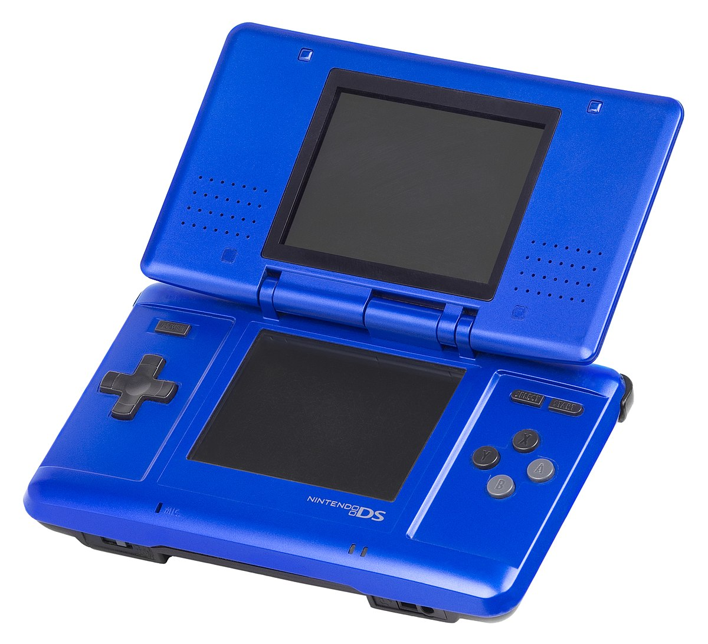
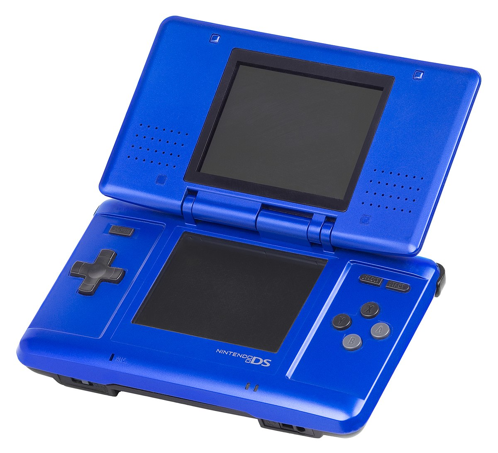

My Start
As far as I can remember video games were apart of my life. I started with my older sister introducing me to the Nintendo DS and shortly after my family got a Wii. I was in love with the console constantly playing New Super Mario Bros. trying to get to the next level or playing Mario party with my family. I would also go to nearby friends houses and spend hours on their Wii and have the best time of my life. I also later on received an Xbox360 where i would play Minecraft with my sisters ! Which really steeped my interested in PC gaming knowing their where different versions of Minecraft.
Progression
As I grew up at the age of 11 I got into PC gaming. With my very own laptop, I could play anything I wanted! I downloaded Steam and downloaded games I was familiar with like Garry's mod and terraria. Minecraft was a big part of my gaming time as well just with all the creativity that flew through my brain was bursting every time I played. As I grew I would go through more and more games and eventually got a pre-built pc for my birthday! It was one of the best gifts because it gave me more freedom in my gaming and let me get better games that I couldn't experience beforehand. Ever since then I've been strictly PC gaming but use a Nintendo Switch a lot!
 
